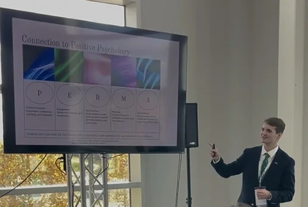

William V. Fullerton (he/him/his)
Leveraging data to tell a human story
About me
Telling stories with data
I’m a builder, researcher, and author working where technology meets people—using data and AI to understand problems and create meaningful solutions.
Education
M.A. in Psychology
Carlow University
Carlow University
B.S. in Statistics & Data Science
Robert Morris University · minor in Finance
Robert Morris University · minor in Finance

Featured talk · Pittsburgh TechFest 2026
AI and Small Businesses
How a community can connect small businesses, student talent, and technology leaders to put AI into action.
Ideas into action
Projects, talks, and the work between them.
Explore speaking, community projects, presentations, and selected media.
Browse Work & Media